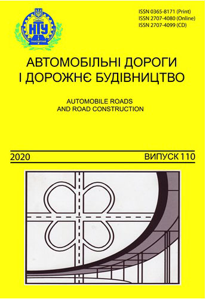

Науково-технічний збірник,
Випуск 110, 2020
Веб-сайт журналу: http://addb.ntu.edu.ua
Свідоцтво суб’єкта видавничої справи
ДК № 1218 від 30.01.2003 р.

У науково-технічному збірнику “Автомобільні дороги і дорожнє будівництво” відображені матеріали та наукові розробки вчених і спеціалістів дорожньо-будівельного комплексу, наукових установ і промисловості з вирішення сучасних задач та проблем з напрямків: Будівництво та цивільна інженерія; Геодезія та землеустрій; Гідротехнічне будівництво, водна інженерія та водні технології, Технології захисту навколишнього середовища, Екологічна безпека, Менеджмент, Маркетинг; Підприємництво, торгівля та біржова діяльність, Управління проектами і системний аналіз, Транспортні технології (за видами), Економіка (за видами економічної діяльності).
Друкується науково-технічний збірник “Автомобільні дороги і дорожнє будівництво” за рішенням Вченої ради Національного транспортного університету. Друковані примірники розповсюджуються серед: державних і провідних бібліотек України, провідних навчальних, наукових, науково-дослідних та проектних закладів дорожньо-транспортного спрямування; підприємств з будівництва, реконструкції, ремонту та експлуатації автомобільних доріг і аеродромів; установ до яких обов’язково повинні надсилатися видання, в яких опубліковані основні результати дисертаційних робіт (Наказом Міністерства освіти і науки України від 11.07.2016 № 820 збірник включений до Переліку наукових фахових видань України).
Електронна копія збірника “Автомобільні дороги і дорожнє будівництво” розміщується на сайті Національної бібліотеки України імені В. І. Вернадського НАН України у розділі “Наукова періодика України” (для періодичних друкованих наукових фахових видань), на сайті Національного транспортного університету і сайті міжнародного науково-технічного збірника «Автомобільні дороги і дорожнє будівництво».
РЕДАКЦІЙНА РАДА
Савенко В.Я., д.т.н., професор, (голова), Славінська О.С., д.т.н., професор, (заступник голови), Петрович В.В., к.т.н., професор, старший науковий співробітник, (секретар), Бондар Н.М., д.е.н., професор. Гамеляк І.П., д.т.н., професор, Каськів В.І., к.т.н., доцент, Усиченко О.Ю., к.т.н., професор, Чечуга О.С., к.т.н., доцент.
РЕДАКЦІЙНА КОЛЕГІЯ
Савенко В.Я., д.т.н., професор, (головний редактор), НТУ (Київ), Славінська О.С., д.т.н., професор, (заступник головного редактора), НТУ (Київ), Петрович В.В., к.т.н., професор, старший науковий співробітник, (відповідальний секретар), НТУ (Київ), Гамеляк І.П., д.т.н., професор, (відповідальний редактор), НТУ (Київ), Бондар Н.М. д.е.н., професор. (відповідальний редактор),НТУ (Київ)
Батракова А.Г., д.т.н., професор, ХНАДУ (Харків), Безуглий А.О., к.е.н., доцент, ДП “ДерждорНДІ” (Київ), Білокінь А.І., д.т.н., професор, ПДАБА (Дніпро), Бондаренко Е.Л., д.геогр.н., професор, НТУ, Київський національний університет імені Тараса Шевченка (Київ), Бондаренко Л.П., к.т.н., доцент, НТУ (Київ), Бубела А.В., к.т.н., доцент, НТУ (Київ), Внукова Н.В, д.т.н., професор, ХНАДУ (Харків), Воркут Т.А., д.т.н., професор, НТУ (Київ), Гавриленко В.В., д.ф-м.н., професор, НТУ (Київ), Гасенко Л.В., к.т.н., доцент, Національний університет «Полтавська політехніка імені Юрія Кондратюка», (Полтава), Гончаренко Ф.П., к.т.н., доцент, ДП "Український державний інститут з проектування об'єктів дорожнього господарсьва"”(Київ), Гречан А.В., д.е.н., професор, НТУ (Київ), Гуляєв В.І., д.т.н., професор, НТУ (Київ), Дмитриченко А.М., к.т.н., доцент, НТУ (Київ), Жданюк В.К., д.т.н., професор, ХНАДУ (Харків), Золотарьов В.О., д.т.н., професор, ХНАДУ (Харків), Кірічек Ю.О., д.т.н., професор, ПДАБА (Дніпро), Кіяшко І.В., к.т.н., професор, ХНАДУ (Київ), Ковальчук В.П., д.т.н., Інститут водних проблем і меліорації Національної академія аграрних наук України,(Київ), Концева В.В., к. е. н, доцент, НТУ (Київ), Кузло М.Т., д.т.н., професор, НУВГП (Рівне), Лантух-Лященко А.І., д.т.н., професор, НТУ (Київ), Лоза І.А., д.ф-м.н., професор, НТУ (Київ), Ломотько Д.В., д.т.н., професор, УДУЗТ (Харків), Ляшенко Д.О., д.геогр.н., доцент, НТУ (Київ), Маланчук М.С., д.т.н., доцент, НУ “Львівська політехніка” (Львів), Мамонов К.А., д.е.н., професор, ХНУМГ ім. О.М. Бекетова (Харків), Марчук О.В., д.т.н., професор, НТУ (Київ), Матейчик В.П., д.т.н.. професор, НТУ (Київ), Мішутін А.В., д.т.н., професор, ОДАБА (Одеса), Меленчук Т.М., д.т.н., доцент, Одеська державна академія технічного регулювання та якості (Одеса), Могільний С.Г., д.т.н., професор, ПДАБА (Дніпро), Мозговий В.В., д.т.н., професор, НТУ (Київ), Нагайчук В.М., к.т.н., доцент, ДП “ДерждорНДІ” (Київ), Павлюк Д.О., д.т.н., професор, НТУ (Київ), Разумова К.М., д.е.н., професор.НАУ (Київ), Романенко В.Д., д.т.н., професор, Навчально-науковий комплекс «Інститут прикладного системного аналізу» Національного технічного університету України «Київський політехнічний інститут імені Ігоря Сікорського, Семко О.В., д.т.н., професор, Національний університет «Полтавська політехніка імені Юрія Кондратюка», (Полтава), Смірнова Н.В., д.т.н., професор, ХНАДУ (Харків), Снісаренко В.І, д.т.н., професор, НДІ «Підземспецбуд» (Київ), Соколова Н.М., к.е.н., доцент, НТУ (Київ), Солодкий С.Й., д.т.н., професор, НУ “Львівська політехніка” (Львів), Толмачев С.М., д.т.н., професор, ХНАДУ ( Харків), Угненко Є.Б., д.т.н., професор, УДУЗТ (Харків), Ужвієва О.М., к.т.н., доцент, УДУЗТ (Харків), Файнлейб О.М., член-кореспондент НАН, д.хім.н, професор, Інститут хімії високомолекулярних сполук НАН України (Київ), Харченко А.М., к.т.н., доцент, НТУ (Київ), Хрутьба В.О., д.т.н., НТУ доцент, (Київ), Шматков Г.Г., д.б.н., професор, ПДАБА (Дніпро), Яковишина Т.Ф., д.т.н., професор, ПДАБА (Дніпро), Riheb Hadji, Ph.D., Department of Earth Sciences, Ferhat Abbas University of Setif, 19000 Setif, (Algeria), Wen Mingming, Ph.D., Dean of the Human resource management Department, (China), Bozho Soldo, Ph.D., Head of Departament of civil Engineering, (Croatia), Ferhat Hammoum, Directeur du laboratoire Matériaux pour les Infrastructures de Transport, (France), Carlo Giavarini, Prof. Full professor of Industrial and Technological Chemistry of "La Sapienza" University in (Italia), Телтаєв Багдат Бурханбайули, доктор технічних наук, професор, президент КаздорНДІ, (Казахстан), Jūratė Sužiedelytė Visockienė, Prof. Dr. Vilnius Gediminas Technical University, Faculty of Environmental Engineering Head of Department Geodesy and Cadastre Department of Geodesy and Cadastre Vilnius (Lithuania), Renata Kotynia, Prof. PŁ, Lodz University of Technology. (Poland), Younes Hamed, Ph.D., Associate Professor, Faculty of Science of Gafsa FSGF Department of Earth Sciences, (Tunisia), Lev Khazanovich, Professor at University of Pittsburgh, Department of Civil and Environmental Engineering, (USA)